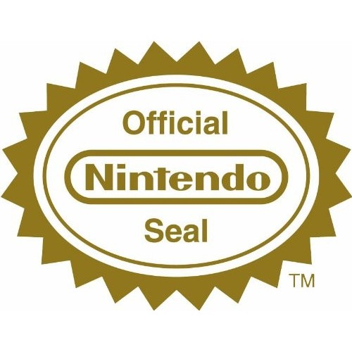

A Chegada da Nintendo
Em 1983 a Nintendo lançou o seu primeiro console caseiro o Nintendo Family Computer somente no Japão. Como foi falado na pagina sobre “A Crise dos Jogos Eletrônicos de 1983” o mercado de vídeo games nos Estados Unidos estava bem complicado e a Nintendo não lançou já no começo o seu console nos Estados Unidos, mas sim no Japão para fazer um teste primeiro.
Em 1981 a Nintendo lançou um dos seus maiores sucessos o Donkey Kong, neste jogo foram apresentados vários personagens que a Nintendo usa até hoje: o macaco gigante chamado Donkey Kong, o Jumpman conhecido hoje como Mario e Lady a princesa em apuros (que por sinal foi a primeira mulher em apuros dos vídeos games). Esse foi o primeiro jogo de plataforma da história e ajudou a Nintendo a entrar no Mercado Americano.
Foto do jogo Donkey Kong de 1981.
Antes deles lançarem o console nos Estados Unidos foi feito um teste para ver como esse console seria aceito pelo povo japonês. O resultado foi um sucesso, o console foi uma inovação no mercado e no seu lançamento já contava com o jogo Donkey Kong, o clássico dos arcades. E somente após alguns anos a Nintendo resolveu lançar o console nos Estados Unidos.
Em 1985 a Nintendo lançou o Nintendo Entertainment System nos Estados Unidos, porém o console foi totalmente mudado com a sua versão japonesa. Eles trocaram a sua estrutura e a sua entrada para cartucho ficou escondida com uma tampa. E de algumas formas que a Nintendo consegue combater a Crise de 1983 foi tentando diferenciar o seu console como se fosse um brinquedo eletrônico e com isso lançaram alguns periféricos para este console como:
Neste console conhecemos o mascote da Nintendo o “Mario”. Em alguns pacotes do NES quando você comprava o console vinha um jogo de brinde e esse jogo era o Super Mario Bros, essa foi uma bela sacada da Nintendo, porque as pessoas podiam começar a jogar o NES com qualquer jogo mas o primeiro jogo que quase todo mundo iniciou jogando foi o Super Mario Bros.
Jogo do Super Mario Bros lançado em 1985
Para evitar a falta de qualidade dos jogos a Nintendo criou algumas regras: a produtora só podia publicar no máximo três jogos por ano e precisava passar por uma verificação para ter o selo de aprovação da Nintendo para ser vendido. Essas produtoras só podia lançar os seus jogos para a Nintendo e para nenhuma outra empresa concorrente.
Selo de Aprovação da Nintendo
O NES é um console de 8-bits e pertence a 3ª geração dos vídeos games e o seu principal concorrente foi o Sega Master System. Porem o NES foi o console mais vendido daquela geração totalizando cerca de 60 milhões de unidades pelo mundo inteiro, fazendo com que os vídeos games voltem a ter o seu prestigio de volta do consumidor Norte Americano.
O Nintendo Entertainment System foi substituído pelo Super Nintendo Entertainment System o conhecido Super Nintendo em 1991 um console de 16 bits e tema principal deste site